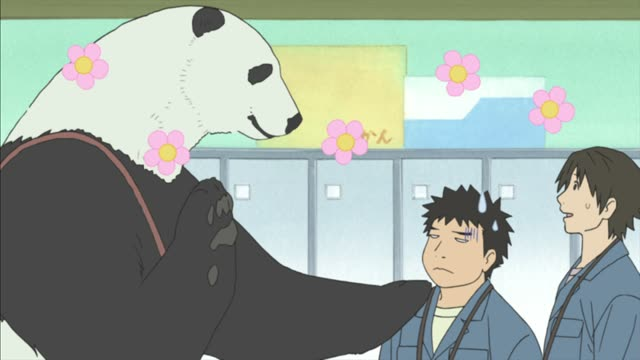
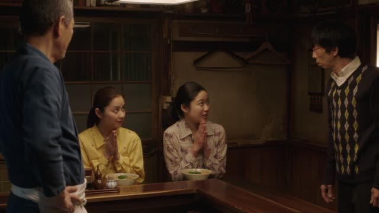

～ように (So that)

Shirokuma Cafe · Episode 14
な…なるべく目立たないようにお願いします。
"P-please, try not to stand out."
～ように means "so that": the first part is the result you want, the second is what you do for it. It goes after a plain verb, very often a negative or a can-form: 忘れないように, 間に合うように.
On this card, Panda asks for a quiet entrance: so that he doesn't stand out. お願いします makes it polite.
ために is for a goal you do yourself (to go, to buy). ように is for a state you can't fully control (not catching cold, being able to).
Good Morning Call · Episode 13
そう？風邪ひかないようにね。
"Really? Well, don't catch a cold."
On this card, the shop owner sees Nao working out in the cold. The rest is left out: 風邪ひかないように(気をつけて), "be careful so you don't catch cold".
Quick Examples
You set three alarms.
遅刻しないように、早く寝ます。
"I'll go to bed early so I'm not late."
PoliteYour friend is writing a note.
忘れないようにメモしとく。
"I'll write it down so I don't forget."
The most common one: 忘れないように.
CasualYour teacher speaks slowly.
みんなが分かるようにゆっくり話します。
"I'll speak slowly so everyone understands."
PoliteBefore a trip.
元気に帰れるように。
"Hoping you come back safe."
Alone at the end: a wish.
CasualWith and without
メモしとく。
"I'll write it down."
忘れないようにメモしとく。
"I'll write it down so I don't forget." Now you know why.
Examples from Media
Brush Up Life · Episode 4
また、ご一緒できるように頑張ります。
"I'll work hard so that we can work together again."

Midnight Diner: Tokyo Stories · Season 2, Episode 7
信田さんがいい漫画描けるように、願掛けです。
"It's a prayer, so that you can draw a good manga."
Sakamoto Days · Episode 7
はい、バレないように擬態しているんです。
"Yes, it's disguised so that nobody finds out."
About the hidden lab.
Oishinbo · Episode 34
満足してくださるようにいつも心がけているんです。
"I always try to make sure my guests leave happy."
Literally "so that they're satisfied".
Samurai Champloo · Episode 9
やつが逃げねえように見張ってこい。
"Go keep watch so he doesn't run off."
ねえ = rough casual ない.
Goblin Slayer · Episode 1
なくさないように。
"Don't lose it."
Handing over an ID tag. The rest is left out: so you don't lose it (be careful).
Kotaro Lives Alone · Episode 6
ショックを乗り越えられるように。
"So that he can get over the shock."
After a can-form: 乗り越えられる.
Quartet · Episode 7
２人がうまくいくように。
"So that the two of them work out."
Asking for help: so they end up together.